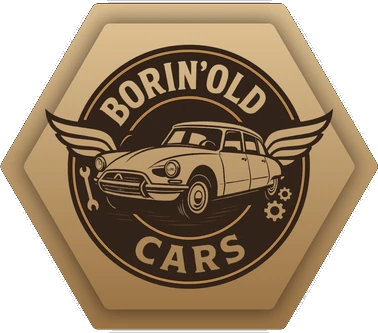

Club de véhicules anciens · Borinage
Borin'Old Cars
Le charme de l'ancien, l'esprit de la passion
Oldtimers, youngtimers et voitures de prestige : on se retrouve pour rouler, partager et faire vivre le patrimoine automobile, de Dour à la frontière française.

Le club
Une bande de passionnés, pas un musée
Borin'Old Cars est né en 2025 dans le Borinage, de l'envie de quelques amis de sortir leurs anciennes du garage et de les faire rouler ensemble. Le club rassemble aujourd'hui des propriétaires de toutes les époques : 2CV et DS, Coccinelle, Alfa Romeo, Jaguar, Rolls-Royce ou youngtimers des années 80 et 90.
Pas besoin d'une voiture de concours : ce qui compte, c'est l'amour de la mécanique, la convivialité et le plaisir de partager la route.
- Balades & roadbooks
Des itinéraires préparés par le club, en Belgique et au-delà de la frontière.
- Dour Auto Rétro
Le rassemblement statique mensuel sur la Grand Place de Dour, ouvert à tous.
- Événements solidaires
Rassemblements au profit d'associations, comme Think Pink pour Octobre rose.
- Entraide mécanique
Conseils, bonnes adresses et coups de main entre membres.
Le comité
Agenda
Prochaines sorties
Chargement de l'agenda…
Le garage
Les voitures du comité
En images
Albums des dernières sorties
Boutique
Aux couleurs du club
Nous rejoindre
Vous avez une ancienne ? Montez à bord.
Le club est ouvert à tous les propriétaires et amateurs de véhicules anciens, youngtimers et de prestige. Venez nous rencontrer à une Dour Auto Rétro ou écrivez-nous : on vous explique tout sur l'adhésion.
Les membres reçoivent une carte de membre numérique, l'accès aux sorties du club et leur voiture rejoint le garage.